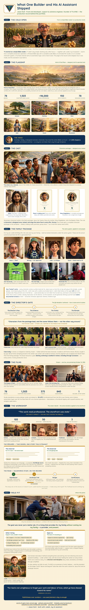

The Build Story
What one builder and his AI assistant shipped
A simple Bible reader grew into a complete production operation: a 78-book Bible app with a complete audio Bible, an animated film studio run on a locked character system, and a YouTube channel with an automation layer — built solo, after work, under a written QA standard. Watch the storyboard scroll, read the summary, or open the full page below.
Storyboard summary — text version
Panel 1 — The Cold Open. Word of God Risen started as a simple Bible reader. It grew into a full production operation — app, audio Bible, film studio, channel, store — built by Jason Nutt with Judah, his AI assistant.
Panel 2 — The Flagship. Word of God Risen: 78 books in WEB + KJV, each with its own designed cover; a complete 1,503-chapter audio Bible read by Grandpa Teddy; ~96,000 cross-references; 153 commits; Next.js/React/TypeScript, live on Vercel, Search Console verified (1,678-URL sitemap), accessibility standard applied throughout.
Panel 3 — The Cast. Seventeen locked character builds for the Gospel films — Jesus, the Twelve, Mary, Mary Magdalene, John the Baptist, Pilate — each with sheets, portraits and trading cards. Designed once, locked, identical in every film.
Panel 4 — The Family Package. The same system applied to Jason's own family for his son's birthday film: canonical portraits, written locks lists, real wardrobe and kit documented and matched. One face took twelve documented versions to approve — likeness treated as QA.
Panel 5 — The Director's Gate. The QA discipline Jason authored: director's pass, evidence, written verdict, remake — nothing ships that hasn't passed. Case study: an identity morph hidden behind the lead character was caught in review, proven frame-by-frame, scrapped, and rebuilt; the lesson became a permanent gate.
Panel 6 — The Films. The Gospel of Mark, live on YouTube; Jude's 15th-birthday film premiering October 14, 2026 in three voice versions. Studio totals: 78 books · 1,503 chapters · 375 videos · 841 subscribers · 1 builder, after work. Audio at −16 LUFS on every release; a Python/YouTube Data API automation layer runs channel operations.
Panel 7 — The Workshop. The career rebuild: an audit ("The work read professional. The storefront was stale."), 105 repos curated, 50 archived and zero deleted, three pins; two résumés (internal for F.H. Cann, one external master in PDF/Word/plain text); Salesforce study on the record — Expeditioner, 162 badges, 43,675 points, Agentblazer Champion '25; JavaScript trail 46% banked; Ranger 6,325 points out.
Panel 8 — Role Fit. What Jason brings: Tier 1 support roots at F.H. Cann, a sustained ~94/100 QA record, Salesforce daily, a shipped flagship, an authored QA standard. Open to support & solutions engineering, QA & testing, internal tools & web content, faith-tech front-end, and AI content operations. "Faithfulness over numbers — one seed planted a day is enough." — Hebrews 6:10.
The storyboard
The full record, panel by panel
The complete hiring-edition storyboard. Prefer it as its own page? Open the standalone storyboard (HTML).
